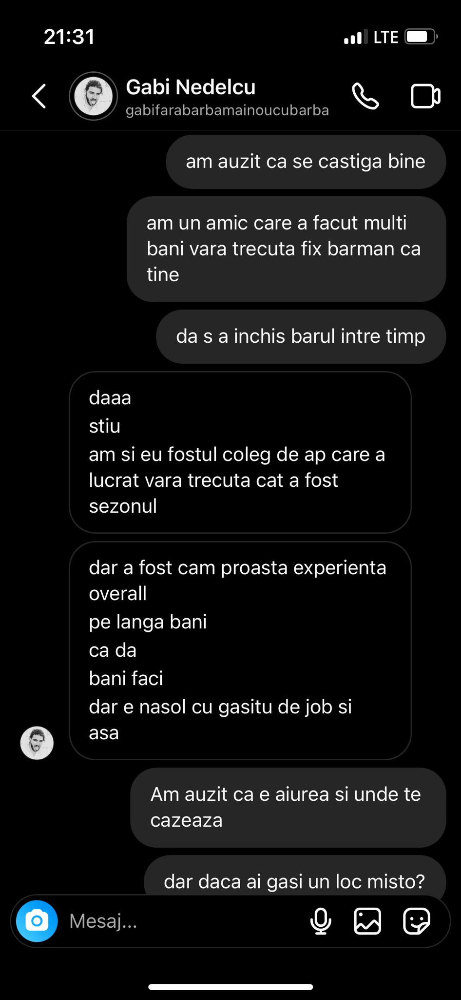
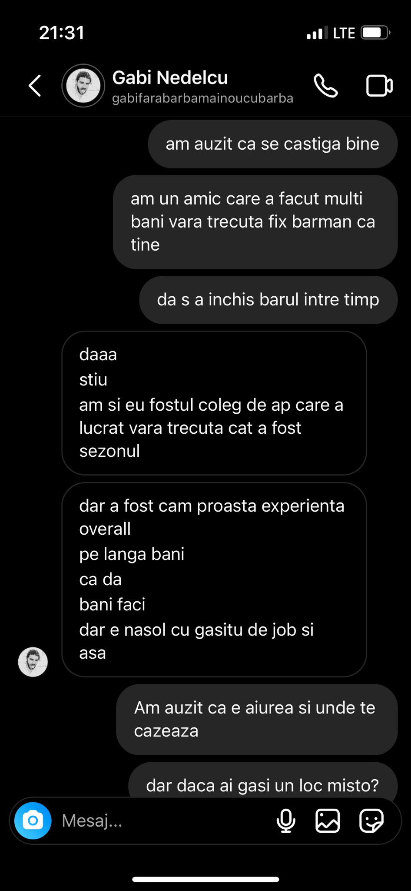

How we identified problem
To realize that what we consider a problem needs to be addressed, we spoke to a few people working in the HoReCa industry to learn more about their employment situation.
Gabi is a talented bartender who can't find a stable job on the Romanian coast during the summer, a seasonal job that would bring in some good money. It often happens that people look for work outside the country because the risk of finding a deceptive job in this field in Romania is high.
 

Madalin is an experienced photographer in events such as weddings and festivals. Despite having made a name for himself in the industry and having many contacts, there isn't enough organization in the industry for people to secure stable positions, with changes being made on-site without contracts.

Solution for the problem
Customer Discovery
In our relentless pursuit of creating products and services that truly resonate with our target audience, we've embarked on a journey of customer discovery.
By collecting valuable insights and feedback, we aim to unlock the secrets to their needs, challenges, and desires.
Our customer discovery process begins with a detailed exploration of the personal and professional backgrounds of the individuals who constitute the Horeca industry.
We've inquired about their names, roles, companies, and job titles, ensuring we have a clear snapshot of who they are.
Morever, we've delved deeper, asking questions that dig into the very core of their experiences. Questions like: "How long have you been working in the Horeca industry?" and "What specific segment of the industry are you involved in?" are designed to provide us with a rich tapestry of the industry's diverse talents, ranging from chefs to restaurant owners, servers, and hotel managers.
Additionally, we want to understand the challenges they face daily in their roles within the Horeca industry. "What are the biggest challenges you face in your role within the Horeca industry?" gives us the insight we need to develop solutions that truly address their pain points.
Networking and staying connected are also essential components of success in the Horeca industry. We've inquired about their current networking strategies and tools, such as attending industry events, using online platforms, and participating in communities or forums.
This knowledge will help us facilitate their professional connections and foster a stronger sense of community within the Horeca world.
Staying engaged in the industry, both online and offline, can be a challenge in itself. "Are there any specific challenges you face in staying connected and engaged with the industry?" is a question that could provide key insights that may guide our future efforts.
Lastly, we've provided an open-ended opportunity for respondents to share any additional information or feedback about their experiences in the Horeca industry.
Here is the form we shared for customer discovery: Customer Discovery Form
Here are the responses: Discovery Form Responses
Participants Questionnaire - Understanding Job Seeking and Hiring in the Horeca Industry
In our continued pursuit of deeper insights into the Horeca (Hotel, Restaurant, and Catering) industry, we've delved into the intricate dynamics of job seeking and hiring within this dynamic field.
We begin by exploring the career trajectories and experiences of those within the Horeca industry with question "How long have you been working in the Horeca industry?".
Our participants' questionnaire also seeks to uncover the real-world experiences of job seekers and employers in the Horeca industry. "Can you briefly describe your most recent experience with job seeking or hiring in the Horeca industry, as a job seeker and/or as an employer?" serves as a platform for them to share their unique stories and insights on their job-seeking and hiring processes.
The challenges faced by job seekers in the Horeca industry are not to be underestimated, and we're eager to gain a comprehensive understanding of these hurdles. Questions such as "As a job seeker in the Horeca industry, what challenges or difficulties have you encountered in the past when searching for job opportunities?" allows us to identify the pain points that job seekers face, potentially leading to innovative solutions.
On the other side of the spectrum, employers in the Horeca industry face their own set of challenges when seeking to hire professionals for their businesses. Through the question "As an employer in the Horeca industry, what challenges have you faced when hiring professionals for your business?" we identify these challenges and understanding how they can be addressed more effectively.
Additionally, we're keen to explore potential solutions and improvements. By asking the participants "Are there any specific features or services that you believe would have been helpful in overcoming these challenges?" we invite them to provide valuable input on the features or services that could enhance the hiring process for both job seekers and employers.
Furthermote, we asked participants "What is the most critical aspect you look for in a professional networking platform that would help you with your job seeking or hiring needs in the Horeca sector?" in order to understand what a key feature they would like in such a platform.
Lastly, we inquire about the challenges faced when finding job opportunities or hiring professionals in the Horeca industry."How do you currently find job opportunities or hire professionals in the Horeca industry?" and "What challenges do you encounter when finding job opportunities or hiring professionals in the Horeca industry?" provide a comprehensive view of the obstacles that need to be addressed in the Horeca sector.
Here is the questionnaire we shared with the participants: Participants Questionnaire.
Here is the results of the questionnaire: Participants Questionnaire Results.
Conclusions after research
Upon analyzing the feedback collected from the participants' questionnaire, a common set of challenges and aspirations emerged within the Horeca job-seeking and employer community.
Both job seekers and employers expressed a strong desire for a dedicated Horeca community platform. Currently, they primarily rely on WhatsApp and Facebook groups for community interactions, but yearn for a more tailored and centralized space to connect, share experiences, and exchange insights.
Notably, both job seekers and employers shared a common challenge – the difficulty in finding a sufficient number of job opportunities and suitable candidates within the Horeca industry.
Employers, in particular, emphasized the importance of having access to candidates' resumes and their prior work experiences. There exists a prevailing concern within the industry regarding the professionalism and trustworthiness of Horeca workers. As such, employers see a structured and comprehensive resume system as an essential component for addressing this issue and facilitating more informed hiring decisions.
In light of these findings, we've reached a compelling conclusion: HorecaX should prioritize the implementation of a well-structured and detailed resume system for job seekers. This initiative aims to bridge the gap between job seekers and employers, enhance professionalism within the Horeca industry, and provide a centralized hub for community engagement and support.
Moving to customer validation...
We consider that we are ready to move to the Customer Validation stage.
The insights collected during the customer discovery phase have provided us with a solid foundation. We've identified specific pain points, needs, and preferences of our target audience, which suggests that there is a market for our solution.
The form revealed a diverse array of roles and experience levels within the Horeca industry, spanning from chefs to restaurant owners and more. This diversity suggests a broad spectrum of potential users who could benefit from our solutions.
One consistent finding was the desire for a dedicated Horeca community platform. This is a promising discovery as it indicates that our target audience is looking for a centralized space for interaction and support, which aligns with our potential offerings.
Many respondents mentioned that they are currently using WhatsApp and Facebook groups for networking. This insight highlights an opportunity to provide a more specialized and effective networking platform that caters to the unique needs of Horeca professionals.
In summary, both the Customer Discovery Form and the Participants Questionnaire provided us with encouraging findings. They highlighted the engagement and willingness of individuals in the Horeca industry to share their experiences, challenges, and desires. These positive discoveries create a strong foundation for the development of solutions that address real needs and pain points within the Horeca community.